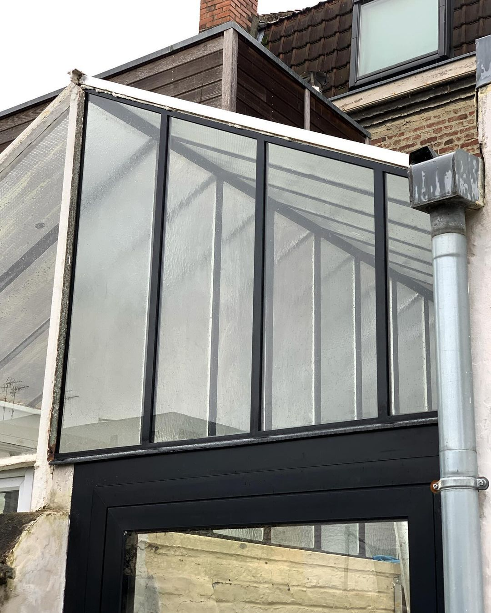
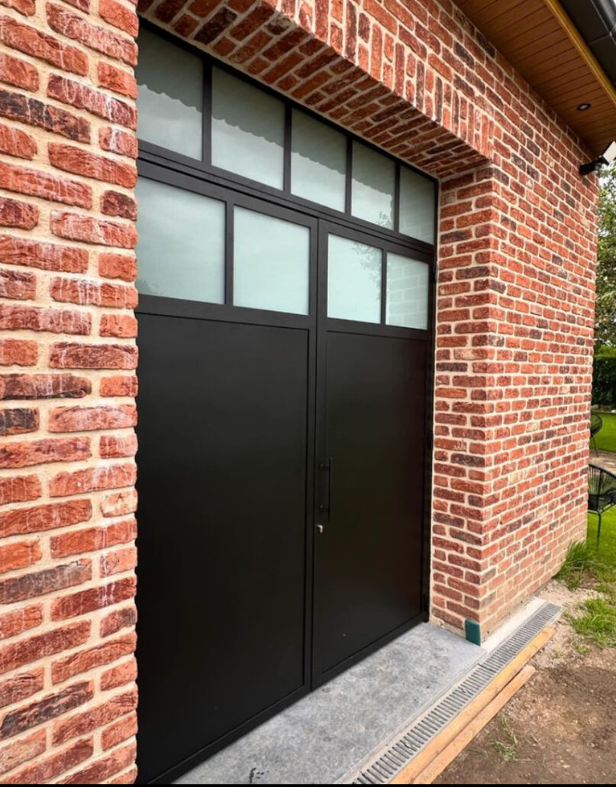
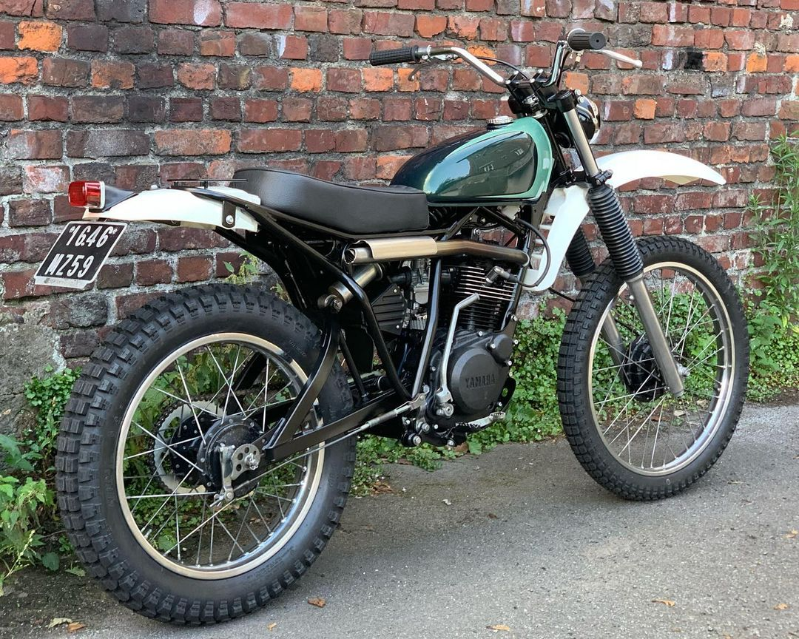

Les verrieres
The algorithm's workings are shrouded in complexity.
Les escaliers
Enshrining the principles of conformity and reinforcing the status quo.

Les Portes
The elusive entities, lacking human form, operate in the shadows.

Les deux-roues
The collective story sculpted by the architects.
... Autres
The collective story sculpted by the architects.

Suivre sur Instagram
The cognitive elite's wealth in the algorithmic society.